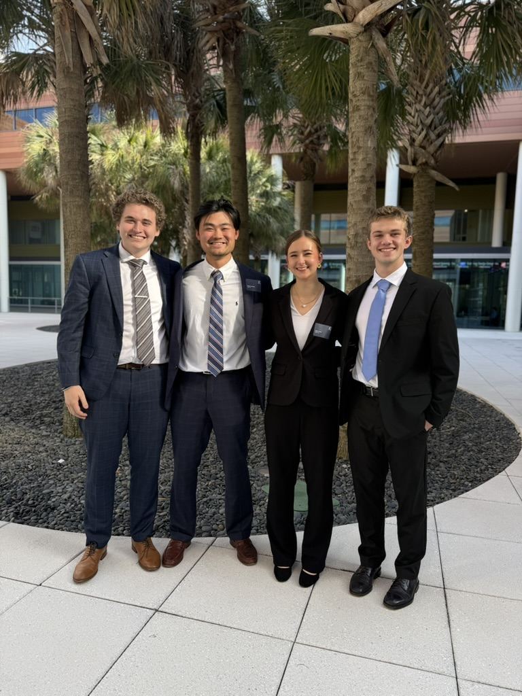

StudioDesk showcases real consulting engagements managed by student teams across industries. Each project highlights structured timelines, strategic analysis, and measurable outcomes.
Our mission is to demonstrate how student consultants can deliver professional level results while maintaining organization and accountability.
Explore Projects
Engagements across public sector, technology, healthcare, and nonprofit industries.
Local governments, startups, and nonprofits collaborate with student teams.
Cross-functional teams delivering research, strategy, and implementation plans.
Municipal waste reduction strategy designed to cut landfill usage by 20%.
Market research and financial modeling for West Coast expansion.
Operational improvements and digital campaign optimization.